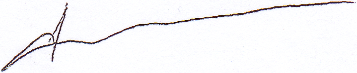

ІНФОРМАЦІЯ РЕДАКТОРАМ, АВТОРАМ, РЕЦЕНЗЕНТАМ

МІНІСТЕРСТВО ОСВІТИ І НАУКИ УКРАЇНИ
НАКАЗ
15.01.2018
м. Київ
N 32
Зареєстровано в Міністерстві юстиції України
06 лютого 2018 р. за N 148/31600
Про затвердження Порядку формування
Переліку наукових фахових видань України
Відповідно до пункту 8 Положення про Міністерство освіти і науки України, затвердженого
постановою Кабінету Міністрів України від 16 жовтня 2014 року N 630 ,
та пункту 12 Порядку присудження наукових ступенів, затвердженого
постановою Кабінету Міністрів України від 24 липня 2013 року N 567 ,
НАКАЗУЮ:
1. Затвердити Порядок формування Переліку наукових фахових видань України, що додається.
2. Визнати таким, що втратив чинність,
наказ Міністерства освіти і науки, молоді та спорту України від 17 жовтня 2012 року N 1111 "Про затвердження Порядку формування Переліку наукових фахових видань України" ,
зареєстрований в Міністерстві юстиції України 02 листопада 2012 року за N 1850/22162.
3. Установити, що науковим фаховим виданням, включеним до Переліку наукових фахових видань України на день набрання чинності цим наказом, присвоюється категорія "В" строком на два роки. Якщо протягом цього строку стосовно видань категорії "В" до МОН подані документи, що підтверджують дотримання вимог для присвоєння категорії "А" або категорії "Б", їм присвоюються ці категорії.
4. Департаменту атестації кадрів вищої кваліфікації та ліцензування (Шевцов А. Г.) забезпечити державну реєстрацію цього наказу в Міністерстві юстиції України в установленому законодавством порядку.
5. Контроль за виконанням цього наказу покласти на першого заступника Міністра Ковтунця В. В.
6. Цей наказ набирає чинності з дня його офіційного опублікування.
Міністр
Л. М. Гриневич
ЗАТВЕРДЖЕНО
Наказ Міністерства освіти і науки України
15 січня 2018 року N 32
Зареєстровано
в Міністерстві юстиції України
06 лютого 2018 р. за N 148/31600
Порядок формування Переліку наукових фахових видань України
1. Цей Порядок встановлює умови формування Переліку наукових фахових видань України (далі - Перелік), а також класифікації та моніторингу видань, включених до Переліку. Видання, яке відповідає визначеним у цьому Порядку вимогам, включається до Переліку.
2. Метою об'єктивної оцінки, класифікації та моніторингу наукових фахових видань є підвищення якості опублікованої у них наукової інформації та інтеграція цих видань до світового наукового простору. Під публікацією розуміється випуск друкованого видання накладом не менше 50 примірників або оприлюднення видання в електронному вигляді в мережі Інтернет у форматі, не призначеному для редагування, з вільним або платним доступом.
3. Наукові фахові видання з Переліку застосовуються для:
1) розвитку вітчизняного наукового потенціалу та інтеграції його у світовий науковий простір;
2) створення простору якісної публічної комунікації вчених, зокрема якісного донесення результатів їх діяльності до вітчизняної і світової наукових спільнот;
3) офіційного визнання наукових публікацій, зокрема:
опублікування основних наукових результатів дисертацій здобувачами наукових ступенів та досліджень претендентів на присвоєння вчених звань;
врахування при оцінюванні результатів наукової діяльності закладів вищої освіти і наукових установ;
врахування при оцінюванні результатів наукової діяльності та атестації наукових та науково-педагогічних працівників;
врахування при оцінюванні проектів науково-дослідних робіт, поданих на конкурси для фінансування за кошти державного чи місцевих бюджетів.
4. Засновниками (співзасновниками) наукового фахового видання можуть бути суб'єкти наукової і науково-технічної діяльності, які діють відповідно до
Закону України "Про наукову і науково-технічну діяльність",
серед яких має бути принаймні одна юридична особа.
5. При включенні наукового періодичного видання до Переліку зазначаються спеціальності, за якими видання здійснює публікації.
6. До Переліку включаються наукові періодичні видання України, що входять до наукометричних баз Scopus та/або Web of Science Core Collection (категорія "А"),
видання, які відповідають вимогам підпунктів 1 - 8 цього пункту (категорія "Б"),
і видання, які відповідають вимогам підпунктів 1 - 5 цього пункту, з урахуванням вимог підпункту 3 пункту 11 цього Порядку (категорія "В"):
1) наявність свідоцтва про державну реєстрацію засобу масової інформації із загальнодержавною та/або зарубіжною сферою його розповсюдження (для періодичних друкованих наукових видань);
2) ISSN-номер, що використовується для ідентифікації друкованого та/або електронного періодичного видання та дотримання заявленої періодичності;
3) присвоєння кожному опублікованому матеріалу міжнародного цифрового ідентифікатора DOI (Digital Object Identifier);
4) наявність web-сайта видання з українським та англійським інтерфейсами (інтерфейс може мати інші іноземні мови, пов'язані зі сферою поширення видання) або web-сторінки видання на web-сайті засновника (співзасновника) видання з такою інформацією:
політика (мета та завдання) наукового видання;
склад редакційної колегії (редакційної ради (за наявності)) із зазначенням наукового ступеня, звання та основного місця роботи;
процедура рецензування та дотримання редакційної етики;
порядок оформлення та подання публікації для оприлюднення;
у разі відкритого доступу - повні тексти за умови розповсюдження за передплатою - інформація про умови доступу та анотації до кожної статті відповідно до змісту випусків, оприлюднених на web-сторінці видання;
якщо видання не є повністю англомовним, кожна публікація не англійською мовою супроводжується анотацією англійською мовою обсягом не менш як 1800 знаків, включаючи ключові слова. Якщо видання не є повністю україномовним, кожна публікація не українською мовою супроводжується анотацією українською мовою обсягом не менш як 1800 знаків, включаючи ключові слова;
5) розміщення на платформі "Наукова періодика України" в Національній бібліотеці України імені В. І. Вернадського НАН України та в Національному репозитарії академічних текстів у разі відкритого доступу електронних копій видання, а за умови розповсюдження за передплатою - повного бібліографічного опису та анотації до статей, які розміщуються у відповідних номерах видань, для формування реєстру академічних текстів;
6) забезпечення якісного незалежного рецензування поданих для публікації матеріалів вченими, які здійснюють дослідження за спеціальністю і мають за останні три роки не менше однієї публікації у виданнях, включених до Переліку, або закордонних виданнях, включених до Web of Science Core Collection та/або Scopus, або мають монографії чи розділи монографій, видані міжнародними видавництвами, що належать до категорій "A", "B" або "C" за класифікацією Research School for Socio-Economic and Natural Sciences of the Environment (SENSE); рецензії, підписані рецензентом звичайним або цифровим електронним підписом, мають зберігатися в редакції не менше трьох років;
7) наявність у складі редакційної колегії видання не менше семи вчених, які мають науковий ступінь за однією із спеціальностей, що відповідають науковому профілю видання згідно з пунктом 5 цього Порядку. Кожен з цих фахівців, включаючи головного редактора видання, повинен мати не менше трьох публікацій за останні п'ять років або не менше семи публікацій (статті, монографії, розділи монографій, що відповідають науковому профілю видання) за останні п'ятнадцять років, у тому числі не менше однієї за останні три роки, опублікованих щонайменше у двох різних виданнях, включених до Web of Science Core Collection та/або Scopus, або мати монографії чи розділи монографій, видані міжнародними видавництвами, що належать до категорій "A", "B" або "C" за класифікацією Research School for Socio-Economic and Natural Sciences of the Environment (SENSE).
У складі редакційної колегії має бути не менше трьох вчених, що працюють за основним місцем роботи в українських наукових установах або закладах вищої освіти, і щонайменше - один науковець, що працює за основним місцем роботи в закордонній науковій установі або закладі вищої освіти. Для включення вченого до складу редакційної колегії потрібна його письмова згода. Вчений може входити до складу не більш як трьох редакційних колегій видань, включених до Переліку;
8) включення до профільних міжнародних наукометричних баз даних, рекомендованих МОН.
7. Для включення періодичного наукового фахового видання до Переліку (категорії "А" та "Б") до МОН подаються такі документи:
1) клопотання засновника (співзасновників) наукового фахового видання про включення до Переліку на офіційному бланку, засвідчене підписом керівника;
2) заповнений бланк заявки на включення наукового видання до Переліку наукових фахових видань України (додаток) на паперовому та електронному носіях;
3) ксерокопія свідоцтва про державну реєстрацію друкованого засобу масової інформації (для друкованих періодичних видань) або витяг з наказу засновника про утворення електронного наукового періодичного видання;
4) документ про здійснення обов'язкового розсилання періодичного видання відповідно до додатка до
постанови Кабінету Міністрів України від 10 травня 2002 року N 608 "Про порядок доставляння обов'язкових примірників документів";
5) два останні номери видання по одному примірнику з копіями рецензій на опубліковані матеріали (з забезпеченням анонімності особи рецензента).
8. Подані документи розглядаються відповідною експертною радою з питань проведення експертизи дисертаційних робіт МОН відповідно до підпункту 4 пункту 8 Положення про експертну раду з питань проведення експертизи дисертаційних робіт Міністерства освіти і науки, молоді та спорту України, затвердженого
наказом Міністерства освіти і науки, молоді та спорту України від 14 вересня 2011 року N 1058, зареєстрованого в Міністерстві юстиції України 10 жовтня 2011 року за N 1167/19905 (далі - Положення). За наявності позитивного висновку експертної ради з питань проведення експертизи дисертаційних робіт, затвердженого відповідно до
Положення,
матеріали подаються на розгляд атестаційної колегії МОН для прийняття рішення.
9. Наказ про включення наукового видання до Переліку МОН оприлюднює на офіційному web-сайті. У разі відмови про включення до Переліку або передчасного виключення видання з Переліку МОН офіційним листом інформує засновника (співзасновників) про причини відмови щодо включення або виключення.
10. Рішення МОН про відмову у включенні наукового видання до Переліку може бути оскаржене протягом місяця з дня отримання засновником (співзасновниками) листа з підставами про відмову шляхом подання до МОН апеляційної заяви або до суду в порядку, передбаченому законодавством.
11. Під час включення наукового видання до Переліку йому присвоюється відповідна категорія, яку разом з датою включення до Переліку необхідно вказувати у вихідних відомостях видання:
1) категорія "А" присвоюється науковим фаховим виданням, включеним до міжнародних наукометричних баз даних Web of Science Core Collection та/або Scopus;
2) категорія "Б" присвоюється іншим науковим фаховим виданням, які відповідають вимогам підпунктів 1 - 8 пункту 6 цього Порядку;
3) категорія "В" присвоюється всім науковим фаховим виданням, включеним до Переліку на день затвердження цього Порядку наказами МОН, а також може присвоюватись виданням, які були виключені з категорії "А" або категорії "Б" на два роки.
Видання категорії "В", яке протягом двох років не отримало права на присвоєння категорії "А" чи категорії "Б", виключається з Переліку без права поновлення.
12. У разі перереєстрації друкованого видання зі зміною свідоцтва про державну реєстрацію друкованого засобу масової інформації або змін в електронному виданні засновник (співзасновники) має(ють) впродовж одного місяця подати до МОН клопотання щодо внесення змін до Переліку та ксерокопію нового свідоцтва про державну реєстрацію друкованого засобу масової інформації або витяг з наказу засновника про зміни в електронному науковому періодичному виданні.
13. Видання, яке отримало статус фахового із визначенням певної категорії, обов'язково підлягає моніторингу МОН щодо дотримання ним вимог цього Порядку. За результатами моніторингу видання може залишитись у відповідній категорії, бути переведеним до іншої категорії або виключеним з Переліку, про що МОН інформує засновника (співзасновників) наукового видання та висвітлює цю інформацію на офіційному web-сайті.
14. Наукове фахове видання виключається з Переліку або переводиться до нижчої категорії за рішенням МОН у разі виявлення порушень вимог, передбачених одним із підпунктів 1 - 8 (виключення з категорії "Б"), або підпунктів 1 - 5 (виключення з категорії "В") пункту 6 цього Порядку. У разі виключення наукового видання з Переліку засновник (співзасновники) може(уть) подавати нове клопотання після виправлення зауважень МОН не раніше ніж через рік з дня прийняття такого рішення.
У разі повторного виявлення цих порушень видання виключається з Переліку без права поновлення.
Підставами для виключення видання з Переліку за рішенням МОН також є:
порушення при опублікуванні видання редакцією, авторами публікацій, рецензентами принципів академічної доброчесності, передбачених законами України;
систематичні публікації матеріалів, які не містять нових наукових результатів, і водночас не містять інформації про те, що вони є оглядовими чи науково-методичними.
15. Голова та члени редакційної колегії є відповідальними за організацію рецензування статей та дотримання академічної доброчесності.
16. При виключенні видання категорії "А" з наукометричних баз Web of Science Core Collection та/або Scopus воно набуває статусу видання категорії "Б". При виявленні підстав для виключення видання з категорії "Б" воно виключається з Переліку або набуває статусу видання категорії "В". У цих випадках видання підлягає перевірці на наявність підстав для виключення його з Переліку відповідно до пункту 14 цього Порядку.
Директор департаменту
атестації кадрів вищої
кваліфікації та ліцензування
А. Г. Шевцов
МІНІСТЕРСТВО ОСВІТИ І НАУКИ УКРАЇНИ
пр. Перемоги, 10, м.Київ, 01135, тел. (044) 481-32-21, факс (044) 481-47-96
E-mail: mon@mon.gov.ua, код ЄДРПОУ 38621185
Засновникам наукових
фахових видань України
Щодо включення наукових видань
до бібліографічних баз даних
Відповідно до Закону України «Про наукову та науково-технічну діяльність» наукове видання - твір (узагальнююча наукова праця, монографія, збірник наукових праць, збірник документів і матеріалів, тези та матеріали наукових конференцій, автореферат дисертації, препринт, словник, енциклопедія, науковий довідник або покажчик, наукове періодичне видання тощо) наукового характеру, що пройшов процедуру наукового рецензування та затвердження до друку вченою (науковою, науково-технічною, технічною) радою наукової установи або вищого навчального закладу, редакційно-видавниче опрацювання, виготовлений шляхом друкування, тиснення або в інший спосіб, містить інформацію про результати наукової, науково-технічної, науково-педагогічної, науково-організаційної діяльності, теоретичних чи експериментальних досліджень (науково-дослідне видання); підготовлені науковцями до публікації тексти пам’яток культури, історичних документів чи літературних текстів (археографічне або джерелознавче видання); науково систематизовані дані чи матеріали, що відображають історію науки та сучасний стан наукового знання (науково-довідкове або науково-інформаційне видання), призначені для поширення.
Згідно з пунктом 8 Положення про Міністерство освіти і науки України, затвердженого постановою Кабінету Міністрів України від 16 жовтня 2014 року № 630, та пунктом 12 Порядку присудження наукових ступенів, затвердженого постановою Кабінету Міністрів України від 24 липня 2013 року № 567, затверджено Порядок формування Переліку наукових фахових видань України.
Відповідно до Порядку формування Переліку наукових фахових видань України, затвердженого наказом Міністерства освіти і науки України від 15 січня 2018 року № 32, зареєстрованого у Міністерстві юстиції України 06 лютого 2018 р. за № 148/31600, наукові фахові видання з Переліку, зокрема застосовуються для розвитку вітчизняного наукового потенціалу та інтеграції його у світовий науковий простір та створення простору якісної публічної комунікації вчених, зокрема якісного донесення результатів їх діяльності до вітчизняної та світової наукових спільнот.
Однією з вимог для включення наукового видання до категорії «Б» Переліку є включення видань до профільних міжнародних наукометричних баз даних, рекомендованих МОН.
Водночас, в порушення Указу Президента України від 24.09.2014 № 744/2014 «Про рішення Ради національної безпеки і оборони України від 28.08.2014 «Про невідкладні заходи щодо захисту України та зміцнення її обороноздатності», доручення Кабінету Міністрів України від 27.02.2015 № 275/1/1-15-ДСК, яким введено обмеження спільних наукових проектів з установами Російської Федерації станом на 24 листопада 2020 року до баз даних «РІНЦ» передають свої метадані 160 українських наукових видань, засновники яких знаходяться в управлінні Національної академії наук та національних галузевих академій, центральних органів виконавчої влади, громадських об’єднань, приватних організацій тощо. Поряд з тим, серед переліку українських наукових видань розташовано 68 так званих видань, свідоцтва про реєстрацію як засобу масової інформацію яких видано псевдоутвореннями «Л/ДНР».
Включення вищезазначених видань до «РІНЦ» порушує законодавство України та суперечить позиції міжнародної спільноти щодо засудження окупації Кримського півострова та окремих районів Донецької та Луганської областей.
Враховуючи Закон України «Про припинення дії Договору про дружбу, співробітництво і партнерство між Україною і Російською Федерацією» та порушення норм іншого українського законодавства та міжнародного права, які стосуються суверенітету та територіальної цілісності України, Міністерство освіти і науки України звертається до засновників українських наукових видань, які продовжують передавати свої метадані та архів публікацій до «РІНЦ», з рекомендацію розірвати договори з Науковою електронною бібліотекою «еLIBRARY.RU» щодо включення видань до «РІНЦ» та розміщення на її сайті метаданих та архіву видання.
Принагідно інформуємо, що відповідно до статті 22 Закону України «Про забезпечення функціонування української мови як державної» наукові видання України публікуються державною мовою, англійською мовою та/або іншими офіційними мовами Європейського Союзу. У разі публікації англійською мовою та/або іншими офіційними мовами Європейського Союзу опубліковані матеріали мають супроводжуватися анотацією та переліком ключових слів державною мовою.
Перший заступник Міністра

Микола КИЗИМ
Голубєв М.І.
287-82-59
ПОРЯДОК ФОРМУВАННЯ ПЕРЕЛІКУ НАУКОВИХ ФАХОВИХ ВИДАНЬ УКРАЇНИ:
ВІДПОВІДІ НА НАЙПОШИРЕНІШІ ЗАПИТАННЯ
Коли набрав чинності наказ МОН від 15 січня 2018 року № 32 «Про затвердження Порядку формування Переліку наукових фахових видань України»?
Порядок формування Переліку наукових фахових видань України, затверджений наказом МОН від 15 січня 2018 року № 32, зареєстрований в Міністерстві юстиції України 06 лютого 2018 р. за № 148/31600, (далі - Порядок) набрав чинності з моменту його офіційного опублікування у Офіційному вісник України (№ 020) 13 березня 2018 року.
Що буде з тими науковими виданнями, які включили до Переліку чотири-п'ять років тому. Чи включать їх після п'ятирічного терміну, як було встановлено у вимогах попереднього наказу?
Відповідно до наказу № 32 від 15.01.2018 виданням у попередньому сформованому Переліку присвоєна категорія «В» терміном на два роки (до 13 березня 2020 року). А попередній наказ цим же наказом визнано таким, що втратив чинність. Але це не означає, що ці видання не можуть бути вилучені з діючого Переліку достроково. У разі встановлення порушення ними вимог, зазначених у абзацах чотири та п'ять пункту 14 Порядку, МОН приймає рішення щодо виключення таких видань з Переліку.
Відповідно до пункту 5 Порядку необхідно зазначати спеціальності, за якими видання здійснює публікації. Яким переліком спеціальностей потрібно користуватися?
Перелік наукових фахових видань України (далі - Перелік) формується відповідно до переліку спеціальностей, за якими здійснюється підготовка здобувачів вищої освіти.
Чи вказувати видавцям категорію наукового видання у вихідних відомостях?
Як показує практика, усі видання, які входили в уже сформований Перелік, у вихідних відомостях зазначають, коли видання включили до Переліку. Однак це не є вимогою. Перелік видань буде розміщено на сайті МОН, і він буде оновлюватися за результатами рішень Атестаційної колегії МОН.
DOI необхідно присвоювати кожній статті окремо, чи достатньо лише присвоєння відповідному номеру?
Відповідно до підпункту 3 пункту б Порядку зазначається, що DOI присвоюється кожному опублікованому матеріалу, тобто як окремо кожної статті, так і самому номеру.
Чи потрібно виконувати вимоги пункту 6 Порядку виданням, які включені до Scopus чи WoS?
Науковим періодичним виданням України, які включені до Scopus та/або WoS, для присвоєння категорії «А» необхідно подати до МОН перелік документів, визначених пунктом 7 Порядку, а саме: клопотання, бланк заявки, копію Свідоцтва або витяг з наказу засновника, реєстр розсилки обов'язкових примірників видань та два останні номери з копіями рецензій на статті.
Чи потрібно у структурі статті публікувати анотацію мовою оригіналу самої статті? Якими ще мовами можна дублювати анотації?
Відповідно до ДСТУ 7152:2010 анотацію необхідно подавати мовою тексту публікації. У виданнях, що виходять іншими мовами (крім української) анотацію повторюють українською мовою. Крім того, Порядком визначено, що статті повинні обов'язково мати розширену анотацію (від 1800 знаків) англійською мовою. Наявність анотацій іншими мовами визначає редакційна колегія наукового видання у вимогах до опублікування статті.
При організації незалежного рецензування чи потрібно враховувати науковий ступінь або вчене звання рецензента?
Ні. Незалежних рецензентів призначає редакційна колегія видання. Порядком визначені мінімальні критерії до рецензентів, а саме здійснення ними наукових досліджень та наявність у них наукових публікацій.
У Порядку зазначено, що рецензент повинен мати за останні три роки не менше однієї публікації у виданні, яке або включене до Переліку, або до Scopus чи WoS, або до SЕNСЕ. Тобто Редакційна колегія може вибирати незалежного рецензента який має лише статті у наших вітчизняних виданнях, які включені до уже сформованого Переліку?
Так, звичайно. А вже через два роки, коли фактично Перелік буде повністю оновлений, це себе виправдає.
Яка форма письмової згоди вченого, що виявив бажання бути у складі редакційної колегії?
Форма згоди довільна. Такого роду вимоги та правила встановлює редакційна колегія чи редакційна рада. Це може бути як і власноруч написана згода, так і згода надіслана на електронну пошту.
Розтлумачте підпункт сьомий пункту 6 Порядку, оскільки у ньому закладено одразу декілька вимог до членів редакційної колегії.
По-перше, редакційна колегія повинна становити не менше семи вчених. Серед них має бути не менше трьох українських вчених та не менше одного закордонного.
По-друге, головний редактор повинен входити в цю мінімальну кількість. На відміну від попереднього наказу, наразі головним редактором може бути навіть закордонний вчений.
По-третє, ці фахівці повинні мати публікації (статті, монографії або ж розділи у монографіях) за певний проміжок часу. Так, є два варіанти: перший - наявність не менше трьох публікацій за п'ять років; другий - наявність не менше семи публікацій за 15 років. Ці публікації мають бути опубліковані не в одному журналі чи збірнику. Серед цих публікацій одна повинна бути досить «свіжою», тобто опублікована за останні три роки.
По-четверте, ці сім вчених повинні мати науковий ступінь за однією зі спеціальностей, що відповідає науковому профілю видання та зазначені у бланку заявки про включення видання до Переліку. Наприклад, видання публікує статті за трьома спеціальностями. Це не означає, що склад редакційної колегії повинен становити 21 особу. Може бути такий варіант, що п'ять вчених представляють одну спеціальність, один - іншу спеціальність, а один - ще іншу спеціальність.
Чи достатньо вченому мати лише один два розділи у різних монографіях, які опубліковані у видавництвах, що належать до категорій «А», «Б», «С» за класифікацією SЕNСЕ, щоб виконати вимоги абзацу першого підпункту 7 пункту 6 Порядку?
Опубліковані монографії чи розділи монографій у видавництвах за класифікацією SЕNСЕ прирівнюються у кількісному визначенні до статей, які опубліковані у виданнях, що включені до Scopus чи WoS. Тобто, вчений може мати три розділи в таких монографіях та чотири статті за останні 15 років, або ж навпаки три розділи в монографіях за останні п'ять років. Однак у такого вченого повинна бути принаймні одна публікація за останні три роки.
Чи обов'язково іноземний вчений повинен відповідати тим критеріям, які ставляться до редакційної колегії у абзаці першому підпункту 7 пункту 6 Порядку?
Виходячи з норми підпункту 7 пункту 6 Порядку, мінімальний склад редакційної колегії повинен становити сім вчених, які повинні мати публікації, визначенні у цих вимогах. Далі зазначається що власне редакційна колегія повинна мати не менше трьох вчених, що працюють за основним місцем роботи в українських наукових установах або закладах вищої освіти та не менше одного вченого, який працює за кордоном. Тобто, для цих чотирьох вчених необов'язкова вимога виконання вимог абзацу першого цього підпункту. Однак тоді збільшується мінімальний склад редакційної колегії.
Чи може вчений - член редакційної колегії представляти іншу спеціальність, що відповідає науковому профілю видання?
Відповідно до Порядку, вчений повинен мати науковий ступінь за однією із спеціальностей, що відповідають профілю видання. Тобто вчений може представляти іншу спеціальність, за умови, якщо його спеціальність зазначена як профільна у виданні. Крім того, у Порядку відсутня заборона вченому представляти декілька спеціальностей. Головне, щоб виконувалася норма підпункту 7 пункту б Порядку за кожною спеціальністю.
Чи вважатимуться правочинними рецензії, які надіслані в редакцію видання електронною поштою, наприклад від іноземного рецензента, або заповненні на веб-сайті наукового видання?
Так, звичайно такі рецензії є правочинними.
МІНІСТЕРСТВО ОСВІТИ І НАУКИ УКРАЇНИ
НАКАЗ
18.11.2020 № 1437
Зареєстровано в Міністерстві
юстиції України
02 лютого 2021 р.
за № 141/35763
Про внесення змін до Порядку формування Переліку наукових фахових видань, затвердженого наказом Міністерства освіти і науки України від 15 січня 2018 року № 32
Відповідно до пункту 8 Положення про Міністерство освіти і науки України, затвердженого постановою Кабінету Міністрів України від 16 жовтня 2014 року № 630, та пункту 12 Порядку присудження наукових ступенів, затвердженого постановою Кабінету Міністрів України від 24 липня 2013 року № 567, НАКАЗУЮ:
- Затвердити Зміни до Порядку формування Переліку наукових фахових видань України, затвердженого наказом Міністерства освіти і науки України від 15 січня 2018 року № 32, зареєстрованого у Міністерстві юстиції України 06 лютого 2018 року за № 148/31600, що додаються.
- Департаменту атестації кадрів вищої кваліфікації (Криштоф С.) забезпечити подання цього наказу на державну реєстрацію до Міністерства юстиції України.
- Департаменту забезпечення документообігу, контролю та інформаційних технологій (Єрко І.) забезпечити внесення відповідних відміток у справи архіву.
- Контроль за виконанням цього наказу покласти на першого заступника Міністра Кизима М.
- Цей наказ набирає чинності з дня його офіційного опублікування.
Т.в.о. Міністра
С. Шкарлет
ЗАТВЕРДЖЕНО
Наказ Міністерства
освіти і науки України
18 листопада 2020 року № 1437
Зареєстровано в Міністерстві
юстиції України
02 лютого 2021 р.
за № 141/35763
1. Пункт 6 викласти у такій редакції:
«6. Перелік формується з наукових періодичних видань України з розподілом на дві категорії: категорія «А», яка присвоюється науковим виданням, що індексуються у базах даних Web of Science Core Collection та/або Scopus та категорія «Б», яка присвоюється науковим виданням, що мають відповідати таким вимогам:
1) наявність свідоцтва про державну реєстрацію засобу масової інформації із загальнодержавною та/або зарубіжною сферою його розповсюдження (для періодичних друкованих наукових видань);
2) наявність ISSN-номера, який підтверджений на вебсайті Міжнародного центру реєстрації періодичних видань та дотримання виданням заявленої періодичності;
3) наявність зареєстрованого (в активному стані) цифрового ідентифікатора DOI (Digital Object Identifier) у кожного опублікованого матеріалу наукового характеру, який перенаправляє на вебсайт (вебсторінку) видання, де розміщений цей матеріал;
4) наявність вебсайта видання з українським та англійським інтерфейсами (інтерфейс може мати інші іноземні мови, пов’язані зі сферою поширення видання) або вебсторінки видання на вебсайті засновника (співзасновника) видання з такою інформацією:
загальна інформація про видання: назва, ISSN, засновники, рік заснування, науковий профіль видання (спеціальності, за якими видання оприлюднює публікації) тощо;
політика (мета та завдання) наукового видання, вимоги до оформлення та порядок подання публікації для оприлюднення, процедура ідентифікації та розгляду інформації або звернень про порушення вимог цього Порядку, усунення таких порушень;
процедура рецензування та дотримання редакційної етики відповідно до принципів, декларованих Комітетом з публікаційної етики (Committee on Publication Ethics / COPE);
склад редакційної колегії (редакційної ради (за наявності)) із зазначенням наукового ступеня, звання, основного місця роботи із зазначенням країни та вебпосилання на дослідницький профіль (ідентифікатор) (Web of Science ResearcherID, Scopus author ID, ORCID ID тощо) та електронної адреси;
контактна інформація редакції (місце реєстрації, місцезнаходження, номер телефону, адреса електронної пошти);
архів з вихідними відомостями видання та з датою розміщення онлайн, дата друку тощо;
у разі відкритого доступу - повні тексти, а за умови розповсюдження за передплатою - інформація про умови доступу та анотації і повний бібліографічний опис до кожної статті відповідно до змісту випусків, оприлюднених на вебсайті/вебсторінці видання. Кожна публікація супроводжується назвою, анотацією та ключовими словами українською та англійською мовою;
5) розміщення на платформі «Наукова періодика України» в Національній бібліотеці України імені В.І. Вернадського НАН України та в Національному репозитарії академічних текстів у разі відкритого доступу електронних копій видання, а за умови розповсюдження за передплатою - повного бібліографічного опису та анотації до статей, які розміщуються у відповідних номерах видань, для формування реєстру академічних текстів;
6) забезпечення якісного незалежного рецензування поданих для публікації матеріалів вченими, які мають науковий ступінь та здійснюють дослідження за спеціальністю, що відповідає тематиці поданого для публікації матеріалу, і є авторами (співавторами) загальною кількістю не менше трьох публікацій у наукових виданнях, включених до категорії «А» та/або категорії «Б» Переліку наукових фахових видань України, та/або у закордонних виданнях, проіндексованих у базах даних Web of Science Core Collection та/або Scopus за відповідною спеціальністю, оприлюднених упродовж останніх п’яти років;
7) для кожної із заявлених галузей знань (не більше п’яти), що відповідають науковому профілю видання згідно з пунктом 5 цього Порядку, редакційна колегія видання повинна включати не менше семи вчених, що мають науковий ступінь та здійснюють дослідження за відповідними спеціальностями. Спеціальність повинна бути представлена не менше ніж трьома членами редакційної колегії, які є авторами (співавторами) наукових публікацій, що відповідають науковому профілю видання. Головний редактор та усі члени редакційної колегії повинні задовольняти одному з таких критеріїв:
наявність не менше трьох публікацій за останні п’ять років, проіндексованих у базах даних Web of Science Core Collection та/або Scopus, та опублікованих щонайменше у двох різних виданнях;
наявність монографії (або двох розділів у колективних монографіях), виданої(них) за останні 10 років видавництвом(вами), перелік яких затверджується наказом МОН, з урахуванням рекомендацій Наукового комітету Національної ради України з питань розвитку науки і технологій;
наявність не менше двох монографій та/або чотирьох розділів у колективних монографіях, виданих за останні п’ять років видавництвами, що не входять до переліку видавництв, який затверджується наказом МОН. Такі монографії мають бути рекомендовані до друку вченою радою закладу вищої освіти або наукової установи та пройти якісне незалежне рецензування щонайменше трьома рецензентами, прізвища яких повинні бути вказані у вихідних даних монографії;
наявність не менше шести публікацій за останні три роки у щонайменше трьох різних виданнях, що включені до категорії «Б» Переліку наукових фахових видань України.
У складі редакційної колегії має бути не менше трьох вчених, що працюють за основним місцем роботи в українських наукових установах або закладах вищої освіти, і щонайменше - один науковець, що працює за основним місцем роботи в закордонній науковій установі або закладі вищої освіти. Для включення вченого до складу редакційної колегії потрібна його письмова згода. Вчений може входити до складу не більш як трьох редакційних колегій видань, включених до категорії «Б» Переліку.».
2. Пункт 11 викласти у такій редакції:
«11 Під час включення наукового видання до Переліку йому присвоюється відповідна категорія, яку разом з датою включення до Переліку необхідно вказувати у вихідних відомостях видання.»;
3. Пункт 14 викласти у такій редакції:
«14. Наукове фахове видання категорії «Б» виключається з Переліку за рішенням МОН у разі виявлення порушень вимог, передбачених одним із підпунктів 1-7 пункту 6 цього Порядку. У разі виключення наукового видання з Переліку засновник (співзасновники) може(уть) подавати нове клопотання про включення до Переліку після виправлення зауважень МОН не раніше ніж через рік з дня прийняття такого рішення.
У разі припинення індексації наукового видання категорії «А» у базах даних Web of Science Core Collection та/або Scopus воно набуває статусу видання категорії «Б». У цьому випадку видання підлягає перевірці щодо відповідності вимог пункту 6 цього Порядку. При виявленні підстав для виключення видання з категорії «Б», воно виключається з Переліку.
Підставами для виключення видання з Переліку за рішенням МОН також є:
порушення при опублікуванні видання редакцією, авторами публікацій, рецензентами принципів академічної доброчесності, передбачених законодавством;
систематичні публікації матеріалів, які не містять нових наукових результатів, і водночас не містять інформації про те, що вони є оглядовими чи науково-методичними.
порушення редакцією декларованих відповідно до вимог підпункту 4 пункту 6 цього Порядку процедури рецензування та принципів редакційної етики.
У разі повторного виявлення цих порушень видання виключається з Переліку без права поновлення.».
4. Пункт 16 виключити.
Директор
департаменту атестації
кадрів вищої кваліфікації
С. Криштоф